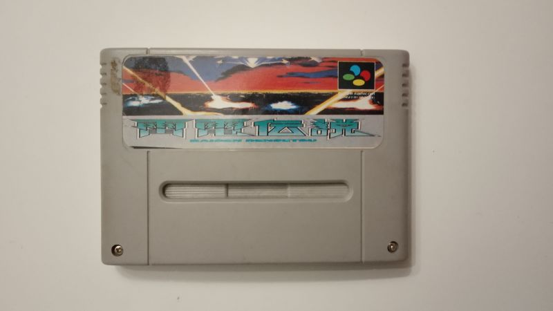
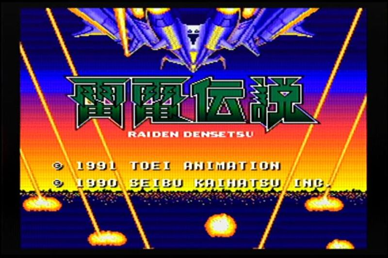
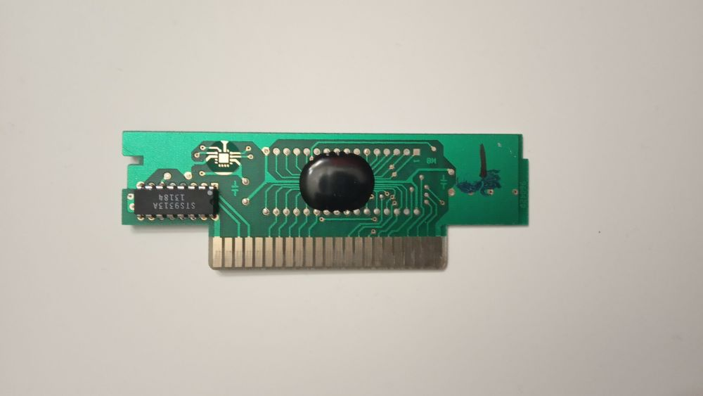
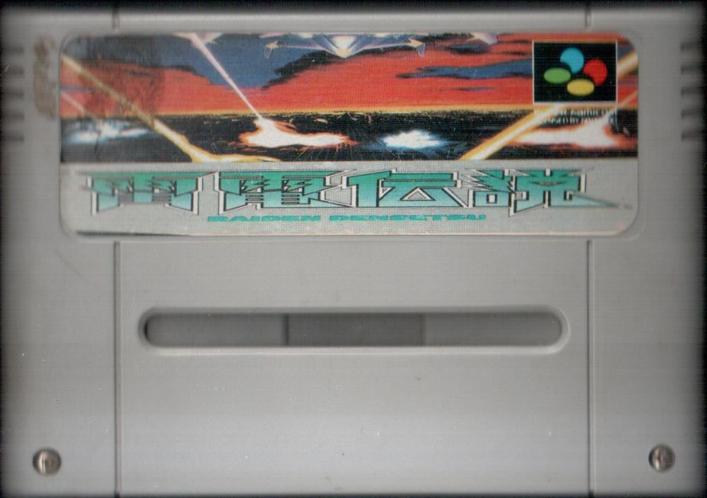
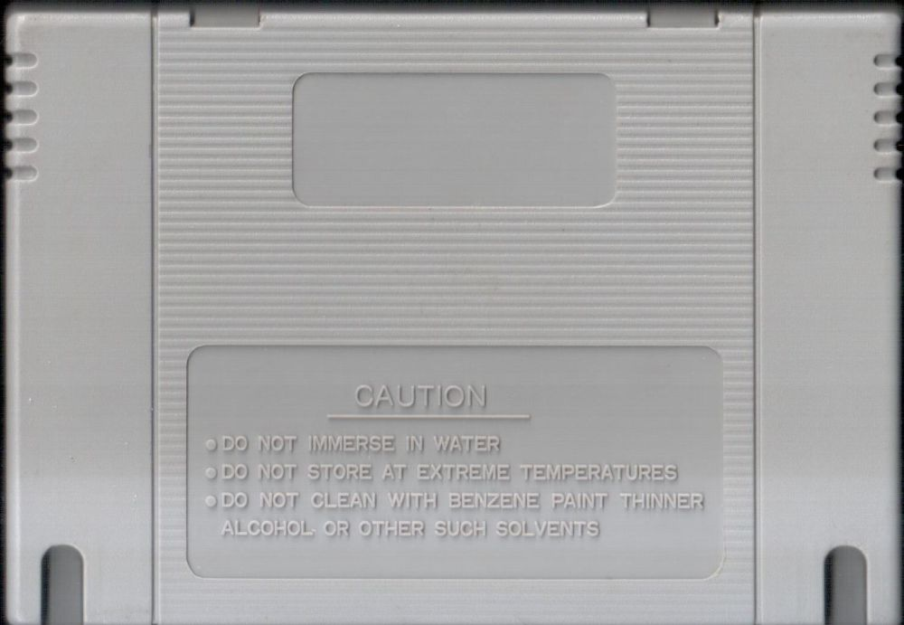

雷電伝説 Raiden Densetsu
Картридж достаточно типичен в своих свойствах пиратского образца:1) Сильно и непропорционально растянутая картинка на самом картридже.
2) Из-за этого название почти нечитаетмо и не очень понятно о чём пытается сказать обложка.
3) Чересчур огромный логотип Super Famicom.
4) Крестовые винты вместо шестигранных.
5) Отсутствие клейма Нинтендо и другие предупреждающие надписи.
6) Вырезы вместо отверстий.
7) Плата использует вместо обычного ПЗУ обычный кристалл залитый смолой.
Картинка хоть и использует оригинальный арт с лицензионного издания, но из-за плохой полиграфии и растягивания картинки - название стало вообще нечитаемым, а иероглифы нашему обывателю ничего не говорят. Более того, картинка обрезана так, что непонятно чего вообще ждать от игры.
Внутри же игра представляет из себя вертикальный шутер, который сделан по канонам игр стрелялок на Денди типа Tiger Heli или Zanac. Скажу честно, подобные игры мне вполне нравятся и я посоветую вам поиграть.
Внутри игра: 雷電伝説 Raiden Densetsu.
Дополнительные фото и описание к ним:



